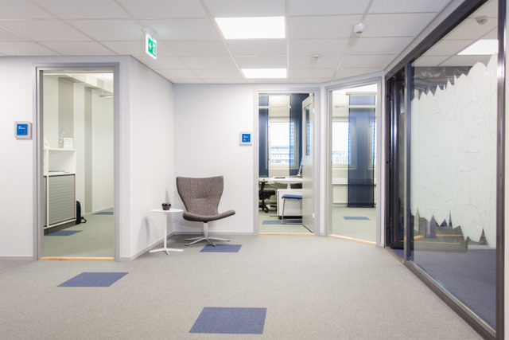
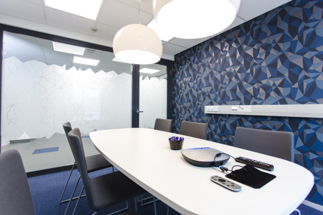

| Toimitilat ovat yrityksen käyntikortti. Viihtyisä ja toimiva ympäristö antaa selkeää kilpailuetua muihin alan yrityksiin nähden, toivottaa asiakkaat tervetulleeksi sekä viestii menestyneestä yrityksestä. Ammattitaidolla sisustettu työympäristö vahvistaa yrityksen imagoa ja ollessaan yhtenäinen ja johdonmukainen se tukee yrityksen brändiä. Toimiva ja viihtyisä työympäristö lisää myös henkilöstön työ-motivaatiota. Tyytyväiset työntekijät sitoutuvat ja ovat avain yrityksen menestymiseen ja tuottavuuden kasvuun. |  |
|  |
Olen toiminut sisustussuunnittelijana vuodesta 2005. Olen Sisustus-suunnittelijat SI Ry:n jäsen, joka on valtakunnallinen kouluttautuneiden sisustussuunnittelijoiden yhdistys. Ammattitaitoisen suunnitteijan tunnistat nimikkeen perässä olevasta SI-lyhenteestä.
|
Yhteistyöterveisin
Erika Rentola-Björklund Sisustussuunnitelija SI
|
|
p. 040-5629741 | erika@erb.fi |